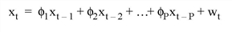

The TS_FCAST function computes future or past values of a stationary time-series using a P-th order autoregressive model.
A P-th order autoregressive model relates a forecasted value xt of the time series X = [x0, x1, x2, ... , xt-1], as a linear combination of P past values.

The coefficients φ1, φ2, ... , φP are calculated such that they minimize the uncorrelated random error terms, wt.
This routine is written in the IDL language. Its source code can be found in the file ts_fcast.pro in the lib subdirectory of the IDL distribution.
Result = TS_FCAST( X, P, Nvalues [, /BACKCAST] [, /DOUBLE] )
The result is an Nvalues-element vector whose type is identical to X.
An n-element single- or double-precision floating-point vector containing time-series samples.
An integer or long integer scalar that specifies the number of actual time-series values to be used in the forecast. In general, a larger number of values results in a more accurate forecast.
An integer or long integer scalar that specifies the number of future or past values to be computed.
Set this keyword to produce past values (backward forecasts or “backcasts”)
Set this keyword to force the computation to be done in double-precision arithmetic.
; Define an n-element vector of time-series samples:
X = [6.63, 6.59, 6.46, 6.49, 6.45, 6.41, 6.38, 6.26, 6.09, 5.99, $
5.92, 5.93, 5.83, 5.82, 5.95, 5.91, 5.81, 5.64, 5.51, 5.31, $
5.36, 5.17, 5.07, 4.97, 5.00, 5.01, 4.85, 4.79, 4.73, 4.76]
; Compute and print five future values of the time-series using ten
; time-series values:
PRINT, TS_FCAST(X, 10, 5)
; Compute five past values of the time-series using ten time-series
;values:
PRINT, TS_FCAST(X, 10, 5, /BACKCAST)
IDL prints:
4.65870 4.58380 4.50030 4.48828 4.46971
6.94862 6.91103 6.86297 6.77826 6.70282
|
4.0 |
Introduced |
A_CORRELATE , COMFIT , CURVEFIT , SMOOTH , TS_COEF , TS_DIFF